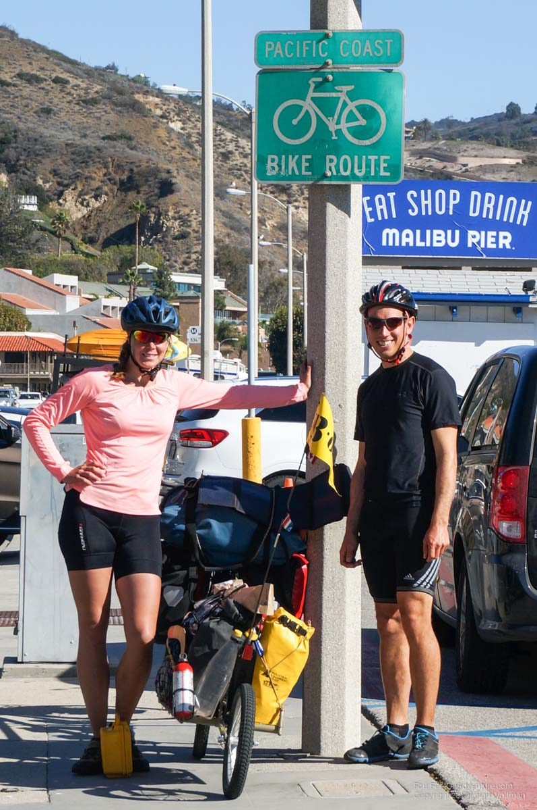
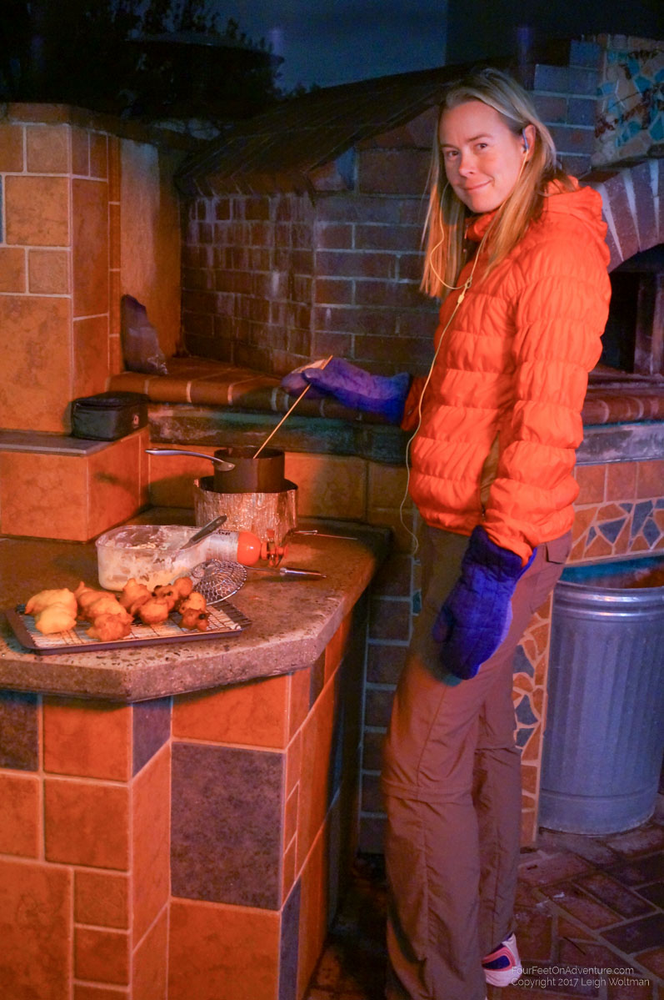

This update is a little behind, but we really haven’t done very much adventurous biking in the last 2 weeks. Of course, we could tell you about all the trips we’ve ridden to REI or Walmart but that might not be very exciting!
In short, after Camarillo where Annette renewed her visa, we headed down to the ocean and found a state campground which offered Hiker/Biker campers a very much reduced rate. We used this nice campsite to stay almost a week where we passed Christmas. There were shops in Oxnard about a 25 km ride away and WiFi at a Starbucks about 9 km the other way in Malibu. (For the readers who are mapping this out, indeed, we moved 5 km one day).
We weathered lots of wind and rain. One sunny day we enjoyed ourselves on the beach with a dip in the ocean and a popstar with a group of dancers on golden shoes who were recording a song on the beach. Will we be photoshopped out? Also we biked one day along dolphins and at a stormy day learned that pelicans are amazing flight machines. We couldn't stop looking at the sandpipers, who run back and forth with the waves, and the colorful parakeets that are super noisy but fun to have around.
From there we biked into LA stopping in Santa Monica at an AirBnb.

And now we’ve been hanging out in a house with a really nice retired educators couple who offered to host us for a week. To get here, we had a long day, as I mistakenly measured our distance as 40 km when it turned out to be 80. This wouldn’t have been so bad if we had started earlier or didn’t have the obligatory stop at the SpaceX headquarters to see the space rocket that's standing at the entrance of their building.

We accidentally ran into a road that SpaceX built a big pipe on to host a student competition to build a fast train from LA to San Francisco.
Biking in LA is not bad, they have lots of bike lanes, where they made the road a little wider and put an extra white line for us. In Santa Monica they were even painted green, it seem to depend on the area. Also, there is a concrete bike lane at the beach, so biking down to the beach and following that for a while makes for a traffic free ride. However depending on the area it can be quite busy with slow bikers, runners and skaters, and we heard that on the weekend there is no point in even trying. Close to the house where we are staying there is a river passing through. They made the bed concrete, they've done that with all rivers here, and made a bypass for cyclists, it sucks under each bridge, so also here no traffic, traffic lights or other obstacles, and it connects us to the beach. Those river beds by the way are wide, bit have a little dip in the middle. Currently the water runs there, but it went down much during our stay so that we think it might be dry most of the year. In spring probably the entire width is used. Anyway, fascinating, and a sight known from certain movies, like Greece :)
Last night we went to the Aquarium of the Pacific which was great. The sea otters had their feeding while we were there and they are pretty adorable.
